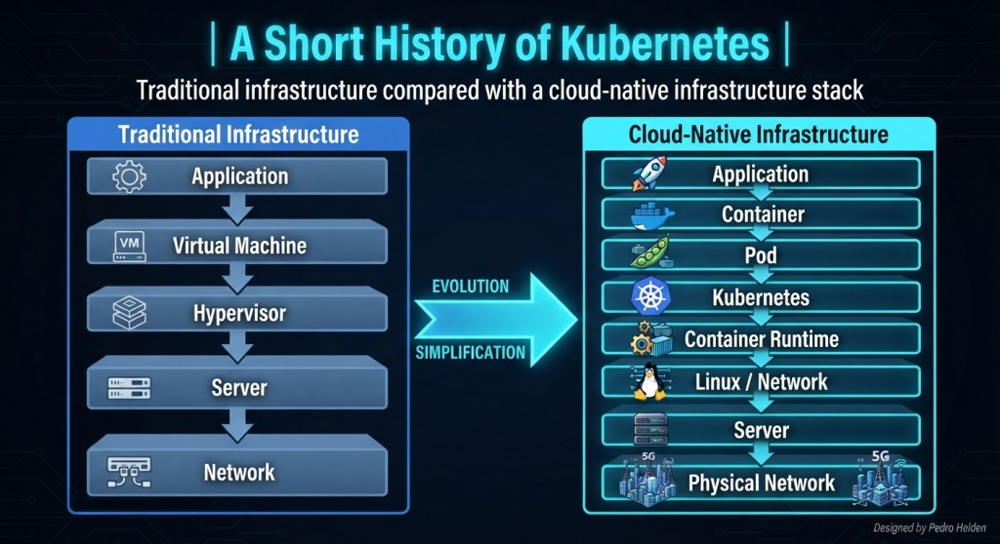
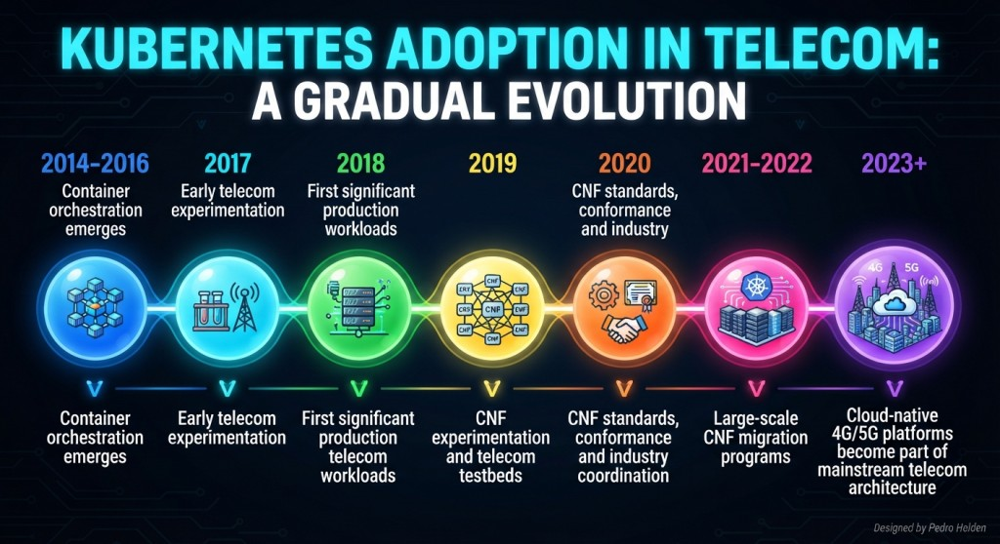
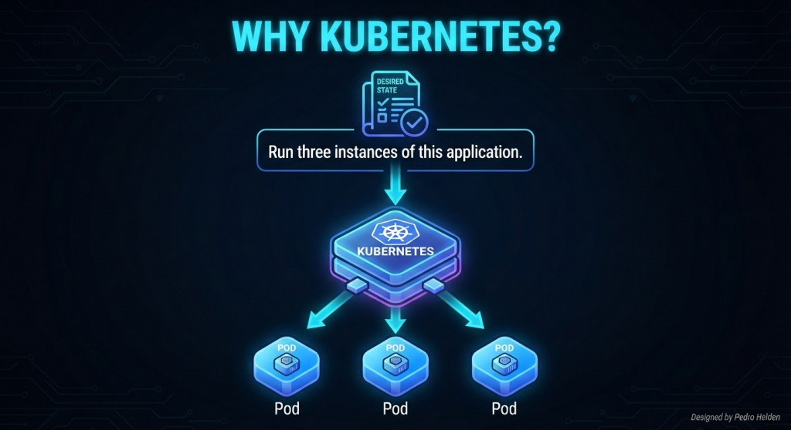
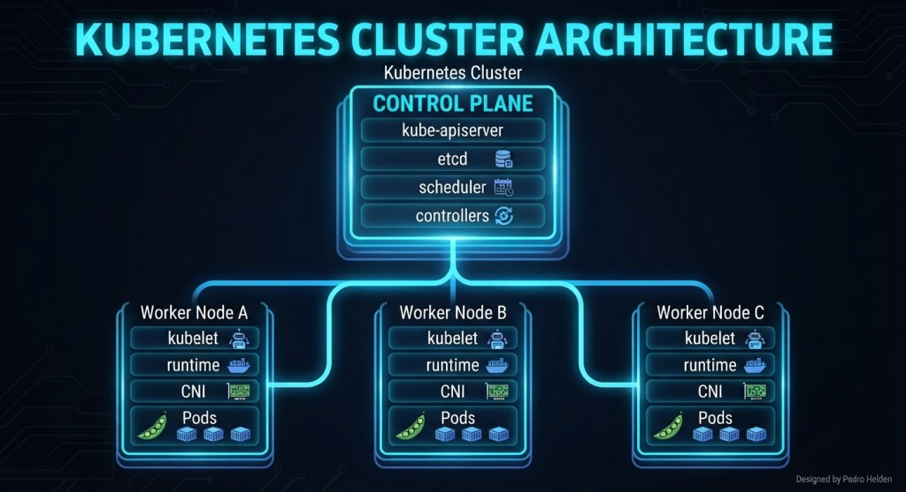

From virtualized infrastructure to a platform capable of orchestrating telecom workloads.
Kubernetes does not replace the network architecture. It becomes the platform on which the network architecture runs.
The previous chapter established an important idea:
Modern telecom networks are increasingly implemented as software.
But software needs infrastructure.
NFVI provides the compute, memory, networking, virtualization, and hardware acceleration required to run those workloads.
The next question is obvious:
Who manages all those workloads?
In cloud-native architectures, one of the most important answers is Kubernetes.
Kubernetes provides a platform for deploying, scheduling, scaling, monitoring, and recovering containerized applications.
Running a web application on Kubernetes and running a 5G Core on Kubernetes are fundamentally different engineering problems.
Kubernetes originated at Google and was released as an open-source project in 2014. Its design was strongly influenced by Google's experience operating large distributed containerized workloads, particularly the internal Borg and later Omega systems.
The project joined the Cloud Native Computing Foundation ecosystem in 2015. From that point forward, Kubernetes evolved from a container orchestration project into a general-purpose platform for operating distributed applications.
The important change for telecom was not simply the ability to start containers. The important change was the introduction of a common control model for infrastructure, networking, scheduling, service discovery, scaling, and application lifecycle.

Figure 10.1 Traditional infrastructure compared with a cloud-native infrastructure stack
This evolution created an important possibility for telecom vendors: network functions could increasingly be developed as software components while Kubernetes provided a common orchestration layer underneath them.
The adoption of Kubernetes in telecom was gradual. It did not begin with operators immediately replacing every physical or virtual network function with containers.

Figure 10.2 The adoption of Kubernetes in telecom was gradual
A concrete example is Nokia, which reported its first Kubernetes-based product going live in early 2018.
In 2019, the CNCF and LF Networking launched a CNF Testbed to demonstrate telecom workloads running as CNFs on Kubernetes alongside traditional VNF deployments.
By 2020, the CNCF had created a Cloud Native Network Functions Working Group and CNF conformance initiative to address the specific requirements of telecom environments.
This was significant because the industry was moving beyond the question "Can telecom software run on Kubernetes?" toward the much more important question: "How should telecom software run correctly on Kubernetes?"
By 2022, CNCF research showed that telecom operators were actively converting PNF and VNF workloads toward CNF architectures, while networking integration remained one of the major technical concerns.
Kubernetes was designed to manage containerized workloads across clusters of machines.
Instead of manually placing every application on every server, an engineer describes the desired state.

Figure 10.3 Instances of application in Kubernetes
The platform then attempts to maintain that state.
If a pod fails, Kubernetes can create another one.
If a node fails, workloads can potentially be rescheduled elsewhere.
If capacity changes, replicas can be increased or reduced.
The engineer describes what the system should look like. Kubernetes continuously works to make reality match that description.
A Kubernetes cluster is more than a collection of worker nodes. It is a distributed control system.

Figure 10.4 a Kubernetes Cluster is a distributed control system
The control plane maintains the desired state of the cluster. Worker nodes provide the compute environment where workloads actually execute.
The kube-apiserver exposes the Kubernetes API. Most interactions with the cluster ultimately pass through this API.
When an engineer creates a Deployment, Terraform applies a resource, an operator modifies a Custom Resource, or a CI/CD system deploys a new version, the API server is the central entry point.
etcd stores the persistent state of the Kubernetes control plane. It contains the information required for Kubernetes to understand the desired and observed state of cluster resources.
The scheduler decides where unscheduled pods should run.
It considers resource requirements, node constraints, affinity and anti-affinity, topology and other scheduling rules.
For telecom, this becomes particularly important when a workload requires dedicated CPUs, hugepages, SR-IOV resources or specific NUMA topology.
Controllers continuously compare the desired state with the observed state.
If a Deployment requests three replicas and only two are running, a controller takes action to restore the desired state.
This control-loop architecture is one of the fundamental ideas behind Kubernetes.
The kubelet runs on worker nodes and is responsible for ensuring that the containers described by Kubernetes are running correctly.
It communicates with the container runtime and participates in the lifecycle of the pods assigned to its node.
The container runtime is responsible for actually executing containers. Modern Kubernetes environments commonly use runtimes implementing the Kubernetes Container Runtime Interface, such as containerd or CRI-O.
Networking is provided through the Container Network Interface. The kubelet and networking components cooperate to create the network environment required by each pod.
One of the most important concepts for understanding Kubernetes is the control loop.
The command kubectl apply does not normally mean "execute these commands forever." It means that the desired resource definition should become part of the cluster state.
Kubernetes then continuously works to make the actual environment match that desired state.
The basic execution unit in Kubernetes is the Pod.
A pod is not exactly the same thing as a container. A pod can contain one or more containers that share networking and certain other resources.
In many simple applications, one pod contains one main container.
In telecom, additional sidecar containers may be used for logging, monitoring, configuration, security, or other supporting functions.
A sidecar is a supporting container running alongside the main application container in the same pod.
Sidecars can provide supporting functionality such as telemetry, security, configuration or traffic processing without requiring the main network function to implement every supporting capability itself.
By default, containers inside a pod share the same network namespace. That means they can communicate through localhost.
The pod normally receives a network identity from the Kubernetes networking layer.
That identity is provided through the Container Network Interface.
Container Network Interface, or CNI, is a standard used to configure networking for containers.
When a pod is created, the CNI plugin can be responsible for configuring its network connectivity.
This makes CNI a critical component of cloud-native telecom networking.
For many enterprise applications, one interface is sufficient.
For telecom, it frequently is not.
A telecom network function may need to communicate through multiple logical or physical networks.
Consider a simplified UPF.
One interface may connect to management or signaling infrastructure.
Another may connect toward the access side.
Another may connect toward the data network.
In a 5G environment, the exact interface model depends on the network function and deployment architecture.
The network function may need to participate in multiple networks simultaneously.
Multus is a CNI meta-plugin that allows a Kubernetes pod to attach to multiple network interfaces.
The primary CNI creates the default interface. Multus can then attach additional interfaces.
Multus itself does not define the physical network. It coordinates the attachment of additional network interfaces using other CNI plugins.
Additional networks are commonly described using a NetworkAttachmentDefinition, usually abbreviated as NAD.
The important troubleshooting principle is that the pod, the NAD, the Multus configuration, the CNI plugin and the underlying NIC all form one chain.
A network namespace provides an isolated network environment.
It can contain its own:
The pod therefore has its own network view.
This is one reason a troubleshooting engineer must know how to enter a pod and inspect its network namespace.
The first question during troubleshooting should be:
Which interface carries the traffic I am investigating?
A packet may be perfectly visible on net1 and completely absent from net2.
Pods are dynamic. Their IP addresses may change.
Applications therefore need a stable way to reach workloads.
Kubernetes provides the concept of a Service.
The service provides a stable logical endpoint while pods behind it may be created or destroyed.
For telecom, however, the engineer must understand exactly which traffic should use a Kubernetes Service and which traffic should use a specialized telecom interface.
Not every telecom packet should necessarily travel through the same networking mechanism.
A management API may use ordinary Kubernetes networking.
A service-based 5G control-plane interaction may use the pod network.
A high-performance user-plane path may require a dedicated interface.
A Deployment describes how Kubernetes should manage replicated stateless workloads.
If one pod disappears, Kubernetes can create another.
This is ideal for applications where instances are interchangeable.
But telecom introduces another challenge.
Not every workload is stateless.
Some telecom functions maintain important state.
If the process disappears, that state may matter.
A replacement pod cannot simply start from zero in every architecture.
Stateless recovery means replacing a process. Stateful recovery means preserving or reconstructing the context that process was holding.
Kubernetes provides StatefulSets for workloads requiring stable identity and persistent characteristics.
This is particularly useful for databases and other stateful services.
However, simply placing a telecom function in a StatefulSet does not automatically make the architecture resilient.
Telecom networks are expected to operate continuously.
High availability therefore requires redundancy.
But redundancy must exist at multiple layers.
Kubernetes scheduling mechanisms can be used to distribute replicas across failure domains.
Kubernetes needs to know whether an application is alive and whether it is ready to receive traffic.
These are different concepts.
A liveness check asks:
Is the process still functioning?
A readiness check asks:
Can this instance safely receive traffic?
A telecom workload may require:
The recovery process therefore becomes considerably more complex.
Kubernetes normally tries to place workloads where resources are available.
Telecom workloads often require more control.
Node labels, taints, tolerations, affinity rules, resource requests, device plugins, and topology awareness can all become relevant.
Kubernetes workloads can declare resource requirements.
However, telecom performance engineering often requires more than simply requesting "4 CPUs."
Four CPUs in the wrong place are not equivalent to four CPUs in the right place.
Networking is only one part of telecom performance engineering.
A high-performance CNF may also require:
This is why a Kubernetes scheduler decision can have consequences far beyond simply deciding which server will run a pod.
For telecom, the scheduler may effectively be deciding which CPU, memory and network topology will process subscriber traffic.
Kubernetes can be configured to support more predictable CPU allocation for workloads that require dedicated cores.
This connects directly with the CPU pinning concepts introduced in the previous chapter.
Kubernetes does not eliminate those requirements.
It becomes the mechanism through which those requirements are expressed and enforced.
For very high-performance workloads, ordinary virtual networking may introduce processing overhead that is undesirable for user-plane traffic.
Single Root I/O Virtualization, or SR-IOV, allows a physical PCIe device such as a NIC to expose Virtual Functions that can be assigned to workloads.
In Kubernetes, SR-IOV resources can be exposed through the SR-IOV device plugin and consumed by pods as extended resources.
This is particularly relevant to high-throughput UPF and other packet-processing workloads.
This means a pod can simultaneously participate in the Kubernetes network and in specialized telecom networks.
The 5G Core functions become cloud-native workloads.
The control plane can use service-based communication over the Kubernetes network.
The user plane can use dedicated high-performance networking.
The orchestration platform manages lifecycle and placement.
The infrastructure provides the physical resources.
Control-plane traffic is often dominated by signaling and API interactions.
The user plane can involve enormous packet volumes.
Therefore, the infrastructure requirements can be dramatically different.
The system therefore cannot be understood as a collection of independent containers.
It is a distributed system.
Each network function has responsibilities.
The interfaces between those functions become part of the application's state machine.
A cloud-native 5G Core is not simply many containers. It is a distributed telecom system whose components happen to run as containers.
The remaining architecture must be capable of continuing service according to the network's design.
When a cloud-native network function fails, troubleshooting must cross these layers.
A disciplined investigation might ask:
"AMF cannot communicate with SMF."
That sentence tells us almost nothing about the root cause.
Once the troubleshooting path has been defined, Kubernetes provides a small set of commands that are extremely useful for validating the different layers.
The objective is not to memorize hundreds of Kubernetes commands.
The objective is to answer specific engineering questions.
kubectl get pods -n mobile -o wide
This provides the basic state of the pods in the mobile namespace, including their IP addresses and the nodes where they are running.
For a telecom engineer, this immediately helps answer:
kubectl get svc -n mobile
This shows the Services defined in the namespace.
It helps determine whether the expected logical endpoint for a network function actually exists.
kubectl get endpointslices -n mobile
A Service can exist while having no usable backend endpoints.
kubectl describe svc smf -n mobile
This provides more detailed information about the SMF Service, including its selectors, ports, and related configuration.
It is particularly useful when the Service exists but traffic is not reaching the expected backend.
kubectl exec -it amf-pod -n mobile -- \ getent hosts smf.mobile.svc.cluster.local
This tests name resolution from inside the AMF pod itself.
kubectl exec -it amf-pod -n mobile -- \ ip route
This shows the routing table visible from inside the AMF pod's network namespace.
It helps answer whether the pod actually has a route toward the destination.
This becomes especially important when multiple interfaces are present.
kubectl exec -it amf-pod -n mobile -- \ ss -lntup
This shows listening TCP and UDP sockets inside the pod.
It can help determine whether the expected application port is actually open.
For example, if the SMF application is expected to listen on a particular TCP port, this command helps verify whether a process is listening there.
If the previous checks look correct but communication still fails, packet capture can provide the decisive evidence.
kubectl exec -it amf-pod -n mobile -- \ tcpdump -ni eth0 host SMF_IP
This captures traffic on the pod's eth0 interface involving the SMF IP address.
The key question is no longer theoretical:
Did the packet actually leave the AMF interface?
If the packet never appears in the capture, the investigation can remain on the AMF side.
If the packet appears leaving the AMF but no response returns, the investigation must move further into the network path.
But no user traffic is flowing.
Questions include:
Cloud-native changes where the network function runs. It does not change what the network function must accomplish.
A Kubernetes-based telecom platform should expose visibility at multiple levels.
For troubleshooting, these sources should be correlated.
A pod can be running while:
The real value of Kubernetes for telecom is not that it makes network functions disappear into containers.
Its value is that it provides a programmable platform for operating complex distributed systems.
A failure can originate anywhere in this stack.
That is why modern telecom troubleshooting requires both protocol knowledge and infrastructure knowledge.
Kubernetes can run on bare metal, private cloud or public cloud. The Kubernetes API remains conceptually similar, but the infrastructure underneath it changes.
The important distinction is that managed Kubernetes services normally provide or manage part of the control-plane infrastructure, while the operator still manages workloads and their Kubernetes resources.
Amazon EKS integrates Kubernetes with AWS infrastructure such as EC2, VPC networking, load balancers, IAM and storage services.
aws eks update-kubeconfig --region REGION --name CLUSTER kubectl get nodes
Azure Kubernetes Service, or AKS, integrates Kubernetes with Azure networking, identity, compute and storage services.
az aks get-credentials \ --resource-group RESOURCE_GROUP \ --name CLUSTER kubectl get nodes
Google Kubernetes Engine, or GKE, integrates Kubernetes with Google Cloud networking, compute, identity and storage.
gcloud container clusters get-credentials \ CLUSTER \ --region REGION kubectl get nodes
Telecom operators do not necessarily need to run CNFs on public cloud. Many carrier-grade deployments use dedicated bare-metal infrastructure or private cloud platforms.
This model is particularly important for workloads requiring predictable latency, locality, high packet rates or direct access to specialized hardware.
Terraform is commonly used to provision infrastructure declaratively. Kubernetes then operates the workloads on top of that infrastructure.
A simplified Terraform workflow may look like:
terraform init terraform plan terraform apply
After the infrastructure is created, Kubernetes tools can deploy the CNFs:
kubectl apply -f namespace.yaml kubectl apply -f cnf.yaml kubectl get pods -n mobile
Terraform can therefore manage the infrastructure layer while Kubernetes manages the application orchestration layer.
Ansible is often used for configuration and operational automation.
It can prepare servers, configure operating-system parameters, install dependencies and perform operational tasks around Kubernetes environments.
Ansible can also interact directly with Kubernetes resources through appropriate modules or by invoking Kubernetes APIs and command-line tools.
Kubernetes provides orchestration for containerized workloads and maintains the desired state of the cluster.
The engineer therefore needs to correlate Kubernetes state with network protocols, packet captures, application logs, infrastructure metrics and physical network behavior.
Kubernetes changes the way telecom infrastructure is operated, but it does not change the fundamental responsibility of the network engineer.
The network still has to establish connectivity.
The control plane still has to exchange signaling.
The user plane still has to forward packets.
Sessions still have to be created and maintained.
Routes still have to be correct.
Interfaces still have to exist.
Packets still have to reach their destination.
What changes is the environment in which all of this happens.
The modern telecom engineer must therefore be comfortable moving vertically through this architecture.
A signaling failure may begin as an application problem, become a Kubernetes Service problem, turn out to be a routing problem inside a network namespace, and finally reveal itself as a physical networking issue.
A UPF that appears healthy may still be unable to forward traffic because of an incorrect SR-IOV attachment, NUMA placement, route, GTP-U configuration or return path.
A pod restart may solve a software failure while simultaneously creating a service interruption if state, readiness or session handling has not been designed correctly.
This is the central engineering lesson of this chapter.
Kubernetes should not make the telecom engineer less interested in packets.
It should make the engineer interested in more layers of the packet's journey.
The packet still matters. Kubernetes simply adds more places where the engineer must understand what happened to it.
Once this mental model is established, the next challenge becomes even more interesting.
We now know how cloud-native network functions are orchestrated, how their interfaces are created, how workloads are scheduled, how high availability is designed, and how failures can be investigated across Kubernetes and the underlying infrastructure.
But one critical question remains:
How do these cloud-native functions actually connect to the real telecom network while preserving the performance, isolation and deterministic behavior expected from carrier-grade systems?
That question takes us beyond basic Kubernetes orchestration and into the deeper networking mechanisms that make telecom CNFs practical at scale.
The boundary between telecom engineering and cloud infrastructure is therefore disappearing.
The engineer who understands only the application will miss the network.
The engineer who understands only the network will miss the platform.
The engineer who understands both can troubleshoot the system as a whole.
And that is where the next chapter begins.